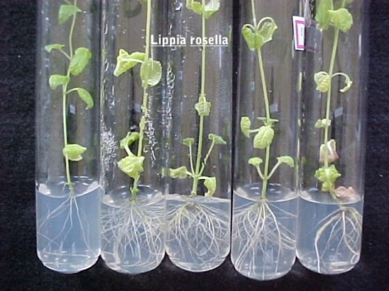

A propagação em vitro, também conhecida como cultura de tecidos, é uma técnica avançada de multiplicação de plantas em um ambiente controlado.
Como desenvolver
.jpeg)
Materiais Necessários
-
Frascos de vidro ou tubos de ensaio: Para cultivar as plantas.
-
Meio de cultura: Uma mistura nutritiva que pode incluir água, sais minerais, açúcar e gela-agar.
-
Hormônios de crescimento: Auxinas e citocininas para estimular o enraizamento e a brotação.
-
Instrumentos de esterilização: Como autoclave, álcool 70% e lâminas esterilizadas.
.jpeg)
Passos para Realizar a Propagação em Vitro
-
Escolha uma planta saudável e vigorosa. Partes como brotos, folhas ou nós são comumente utilizadas.
-
Desinfete a parte da planta escolhida, lavando-a em água e detergente, seguida de imersão em solução de hipoclorito de sódio (água sanitária) ou álcool. Enxágue bem em água estéril.
-
Prepare o meio de cultura com os ingredientes necessários, incluindo nutrientes e hormônios. O pH deve ser ajustado para cerca de 5,8.
-
Em ambiente estéril (como uma câmara de fluxo laminar), coloque a parte da planta desinfetada no meio de cultura.
-
Feche os frascos e coloque em um ambiente com temperatura e luz controladas. A luz indireta é geralmente preferível.
-
Monitore o crescimento das plantas. As mudanças podem incluir a formação de brotos e raízes.
-
Se necessário, transfira as plântulas para novos meios com diferentes concentrações de hormônios para estimular o crescimento desejado.
-
Quando as plântulas estiverem bem desenvolvidas, retire-as do meio de cultura e acostume-as ao ambiente externo, primeiro colocando-as em um local com sombra e umidade controlada.
-
Após algumas semanas de aclimatação, transplante as mudas para vasos ou diretamente no solo.

Exemplo de forma de propagação
Dentro do bequer há água de coco
Foi colocado no tubo de ensaio 01 foram 10 gotas de água de coco
Foi colocado no tubo de ensaio 02 foram 25 gotas de água de coco
Foi completado com água
Assim que ficou os dois tubos de ensaios
Foi colocada duas folhas de suculenta